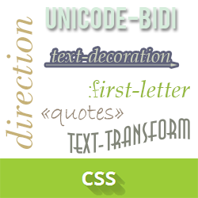

font
- универсальное свойство, которое позволяет одновременно задать несколько характеристик шрифта и текста.
Синтаксис
Синтаксис
font: [font-style||font-variant||font-weight] font-size [/line-height] font-family | inherit
font-style
- определяет начертание шрифта: обычное, курсивное или наклонное. Когда для текста установлено курсивное или наклонное начертание, браузер обращается к системе для поиска подходящего шрифта. Если заданный шрифт не найден, браузер использует специальный алгоритм для имитации нужного вида текста. Результат и качество при этом могут получиться неудовлетворительными, особенно при печати документа.
Синтаксис
Синтаксис
font-style: normal | italic | oblique | inherit